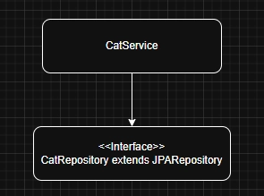
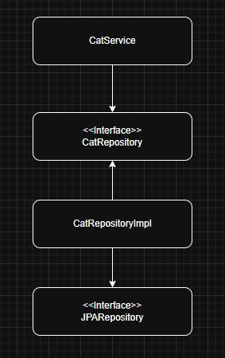
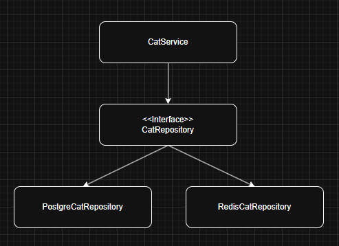

JPA Entity와 도메인을 분리하고 Repository를 재구성하여 도메인 중심 구조로 개선한 사례입니다.
@Entity
@Getter
public class Cat {
@Id
private Long id;
@OneToOne
@MapsId
@JoinColumn(name = "user_id")
private User user;
@Transient
private Map<ItemCategoryEnum, OwnedItem> equippedItem = new HashMap<>();
@PostLoad
public void loadEquippedItem() {
List<OwnedItem> equippedItems =
ownedItems.stream()
.filter(OwnedItem::getIsUsed)
.toList();
for (OwnedItem owned : equippedItems) {
equippedItem.put(owned.getItem().getCategory(), owned);
}
}
}
문제의 원인은 도메인 모델이 JPA Entity에 직접 의존하는 구조에 있었습니다.
JPA 의존적인 어노테이션으로 인해 Cat 엔티티는 JPA를 통해 로드될때만 유의미하게 작동하는 문제가 있었습니다. 이로 인해서 테스트 코드에서 new 연산자로 생성한 객체에서는 착용 아이템을 올바르게 표현할 수 없었습니다.
또한, JPA Entity에 도메인 로직이 들어가게 되면서 순수 도메인 단위 테스트가 어려워졌습니다. 이를 해결하기 위해 테스트 코드에서 @PostLoad를 담당하는 메서드를 직접 실행시키는 방법이 있겠지만, 테스트 코드도 JPA에 의존적이게 되는 문제가 발생합니다.
테스트 코드 작성의 불편함은 테스트 관리 비용을 증가시키고, 이는 서비스의 전체적인 신뢰도 하락을 유발할 수 있다고 판단하였습니다.
저는 이 문제를 해결하기 위해 2단계의 개선 전략을 사용하였습니다.
이 두 가지의 개선 전략에서 나오는 시너지를 이용하여 도메인 중심적인 구조로 만들기 위해 노력하였습니다.
@Getter
public class Cat {
private final Long userId;
private String name;
private List<Item> items;
private EquippedItems equippedItems;
public Cat(Long userId, String name) {
this.userId = userId;
this.name = name;
this.items = new ArrayList<>();
this.equippedItems = new EquippedItems();
}
public void purchaseItem(ProductItem productItem) {
validateItemExist(productItem);
Item item = new Item(productItem.getId(), productItem.getSlot(), false);
items.add(item);
}
public void equip(Long itemId) {
Item item = getItem(itemId);
equippedItems.equip(item);
}
}

개선 전에는 CatService가 JpaRepository 인터페이스를 직접 주입받아 사용하고 있었습니다. 전략 1로 인해 Domain과 Entity가 분리되면서 계층 간 역할을 명확히 구분할 필요성이 생겼습니다. 이에 따라 Service가 영속성 기술에 직접 의존하지 않도록 DIP 원칙을 적용하여 Repository를 추상화하고 구조를 개선하였습니다.


개선 후에는 Service에서 필요로 하는 데이터를 CatRepository Interface에 명세해두고, 구현체가 이를 구현하도록 만드는 것으로 구현 내용은 내부로 숨길 수 있는 구조가 되었습니다. CatService는 Interface만을 의존하게 되어 내부 구현체에 대해서는 몰라도 되는 구조가 되면서, 원하는 구현체로 갈아 끼울 수 있는 형태가 되었습니다.
도메인과 엔티티를 분리하고 Repository를 추상화하면서 초기 개발 비용이 증가한다는 트레이드오프가 존재했습니다. 하지만 팀원들과 협업하는 관점에서 계층에 대한 경계가 명확하게 정해지는 것으로 소통 비용이 감소하고, 서비스 관점에서는 도메인에 대한 신뢰성 향상, 개발 관점에서는 변경에 취약하지 않은 코드를 작성할 수 있다는 장점이 존재합니다.
초기 개발 비용은 증가했지만, 장기적인 유지보수성과 테스트 용이성 측면에서 더 큰 이점이 있다고 판단했습니다. 테크 리더로서 해당 구조의 필요성과 기대 효과를 팀원들에게 충분히 설명했고, 그 과정을 거쳐 전략을 최종 적용하게 되었습니다.
이번 경험을 통해 설계는 정답이 아니라 선택의 문제라는 것을 깨닫고, 상황에 맞는 균형을 찾는 과정이라는 것을 배웠습니다.